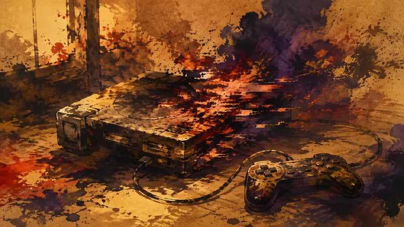

更正 PS2 使用超過 20 年後在遊玩途中故障，最後畫面成了奇異景象（譯）
更正：原摘要沿用法文來源的在地譯名 Poursuite Infernale 2，中文讀者無從辨識，已改回原題 Need for Speed: Hot Pursuit 2。
展開完整說明（1 段）
zh-CN 與 ja 兩樹的同一處譯名受現行更正工具限制尚未同步。
四語版本依繁中更正內容同步重譯（發布後複核）。
先鴉｜黎明快訊
玩家能動性：政策如何限制它、產業如何形塑它、敘事設計如何實現它。

一台使用超過 20 年的 PlayStation 2 在遊玩《Need for Speed: Hot Pursuit 2》時出現嚴重硬體故障，玩家錄下主機最後的運作畫面。遊戲中的賽道紋理、車輛幾何與色彩逐步扭曲，沒有直接黑屏，而是留下近似抽象影像的故障場景。文章將原因指向老化零件，可能涉及圖形處理器晶片下方焊點或視訊記憶體 vRAM；Reddit 的 r/crtgaming 社群則把這段退役過程視為一台老主機在使用中留下的告別。
來源：JeuxVideo.com
更正：原摘要沿用法文來源的在地譯名 Poursuite Infernale 2，中文讀者無從辨識，已改回原題 Need for Speed: Hot Pursuit 2。
zh-CN 與 ja 兩樹的同一處譯名受現行更正工具限制尚未同步。
四語版本依繁中更正內容同步重譯（發布後複核）。
先鴉觀點
老主機壞掉提醒我們，玩家與遊戲的關係也受硬體壽命支配；收藏與懷舊的快樂是真實的，但不等於設備永遠可用。能否維修、備份與繼續存取，往往比平台當年的銷量更直接決定玩家保有多少控制權。
本段為 AI 產出的觀點，自動發布，人工於發布後複核。